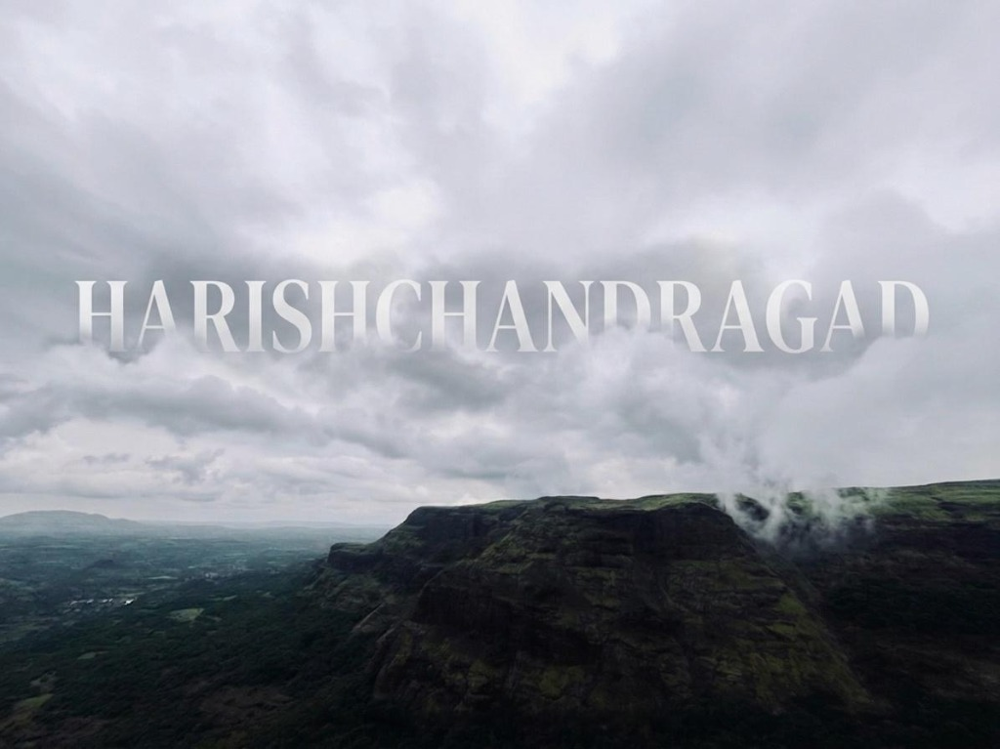
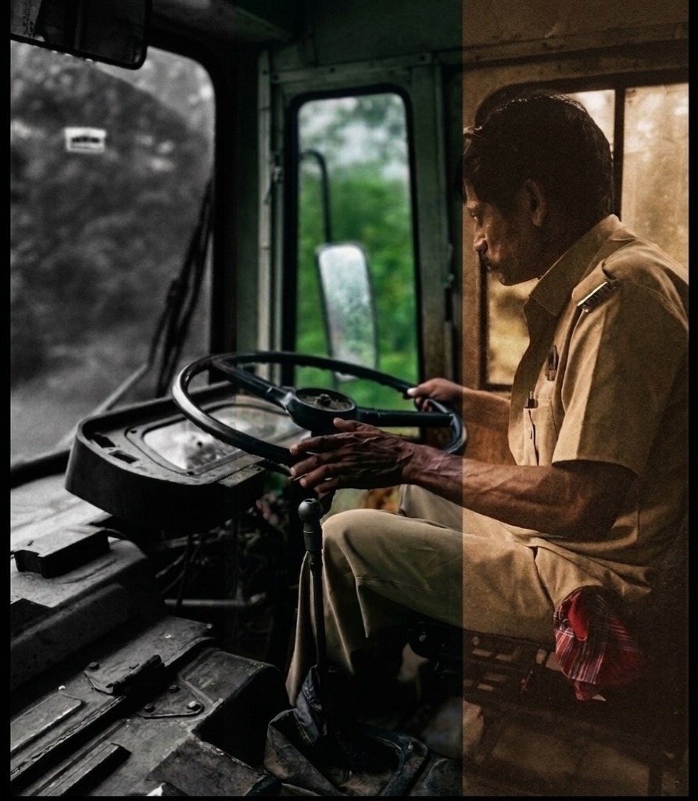

There are places where the earth doesn't just end; it drops away into a dream. Harishchandragad is one of those places. Standing at 1,422 meters, this ancient fort of the Kalachuri dynasty is not merely a destination—it is a confrontation with the sheer scale of the Western Ghats. We arrived as the pre-monsoon winds began to whip through the Malshej region, carrying the scent of parched earth finally meeting the rain.
"At Konkan Kada, the wind doesn't blow; it roars, pushing the clouds vertically up the cliff in a display of raw, elemental theatre."
The highlight of any journey here is the Konkan Kada. A semicircular, overhanging cliff with a 500-meter vertical drop, it feels like the edge of the world. During our stay, we witnessed the legendary "vertical cloud burst"—where the wind is so strong it forces the clouds back up the cliff face, creating a mist that defies gravity itself. It is at once terrifying and deeply humbling.

The concave overhang of Konkan Kada, where the sky meets the abyss.
But Harishchandragad is more than just its vistas. It is a place of deep, silent history. The Kedareshwar Cave houses a massive Shiva Linga perpetually surrounded by waist-deep, ice-cold water. Legend says the four pillars of the cave represent the four Yugas—Krita, Treta, Dvapara, and Kali. Only one pillar remains standing today. They say when it falls, the world as we know it will end. Standing in that cold silence, watching the water ripple around the ancient stone, it’s a legend that feels strangely plausible.
We spent the night in the ancient caves, the rock walls echoing with the whispers of a thousand years. From the 6th-century carvings of Harishchandreshwar temple to the sweeping views from Taramati Peak—the highest point of the fort—every step here is a step back in time. As the sun set over the Konkan plains, painting the abyss in shades of burning copper, we realized that Harishchandragad doesn’t just offer a view; it offers a perspective.
"Some summits are reached with the feet; Harishchandragad is reached with the soul."

The return journey: a silent witness to a thousand departures.
On the long road back, I've been on this bus maybe twice, three times. Same route each time, same driver, same grey weather outside the windows.
He wears a khaki uniform — the kind that's been washed so many times it's lost any crispness it once had. A red checked cloth tucked at his waist. Shoulder epaulettes that suggest some official rank nobody on the bus thinks about. He sits slightly forward, both hands on that big worn wheel, eyes straight ahead.
The bus is old. The dashboard looks like it's held together more by habit than hardware. The steering wheel is thick and dark from years of the same grip, the same turns. There's nothing modern about any of it.
But outside — green. Dense, hilly, the kind of trees that close in on both sides of a mountain road. Every time I've sat on this bus, the view through those windows has been the same. I still find it worth looking at. He stopped finding it interesting a long time ago, I'd guess.
That's what gets me about this photo — whoever took it split it down the middle. Black and white on the left: the machinery, the road, the mechanics of the thing. Warm on the right: him. The person doing it. I don't think that split was accidental.
I've traveled this route so few times I still notice it. He's driven it so many times he's become part of it. Same uniform, same wheel, same trees blurring past — and he still shows up and puts both hands on that wheel like it matters.
Maybe it does. Probably it does. I just don't think he's sitting there wondering about it.